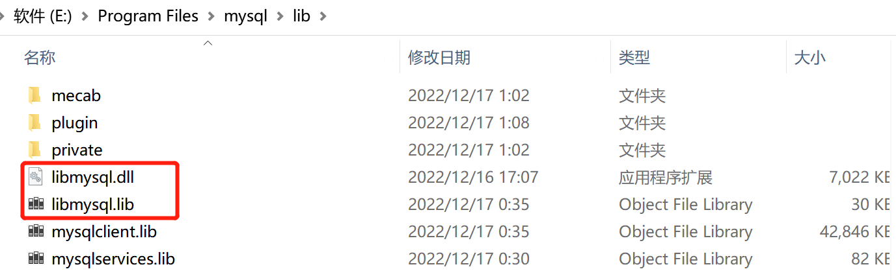

衣橱软件
连接mysql
下载mysql软件，并完成安装
在安装目录里找到链接库lib、动态库dll、头文件h

附加包含目录中，添加头文件所在文件夹【需要用64位的编译器】
在VS中包含该目录
在生成/运行目录里拷贝动态库，或者直接将动态库的目录加到环境变量中
测试程序
1
2
3
4
5
6
7
8
9
10
11
12
13
14
15
16
17
18
19
20
21
22
23
24
25
26
27
28
29
30
31
32
33
34
35
36
37
38
39
40
41
42
43
44
45
using namespace std;
int main()
{
MYSQL mysql;
mysql_init(&mysql); //初始化MYSQL变量
MYSQL_RES* result; //表数据存放结构体
MYSQL_ROW row; //表的行数据
//主机IP 用户名 密码 数据库名 端口 是都使用socket机制登陆 标识位，默认0
if (mysql_real_connect(&mysql, "127.0.0.1", "root", "bf520999", "accouting", 3306, NULL, 0)) {//连接到mysql
cout << "MySQL数据库连接成功" << endl;
}
else {
cout << "数据库连接失败，请检查参数信息\n";
}
if (!mysql_query(&mysql, "SELECT * FROM accounting_record")) //从表newtable中查数据，若查询成功返回0，失败返回随机数
{
cout << "查询成功" << endl;
}
else {
cout << "查询失败\n";
}
result = mysql_store_result(&mysql); //将查询到的结果集储存到result中
int cloNum = mysql_num_fields(result); //返回结果集中的列数
int rowNum = mysql_num_rows(result); //返回结果集中的行数
std::cout << "表的行列数：" << rowNum << " " << cloNum << " \n";
while ((row = mysql_fetch_row(result))) //mysql_fetch_row 检索结果集的下一行
{
for (int i = 0; i < cloNum; i++) //利用for循环，输出该行的每一列
{
cout << row[i] << "\t"; //row是MYSQL_ROW变量，可以当做数组使用，i为列数
}
cout << endl;
}
mysql_free_result(result); //释放结果集所占用的内存
mysql_close(&mysql); //关闭与mysql的连接
return 0;
}中文乱码问题
1
mysql_set_character_set(&mysql, "gbk");
本博客所有文章除特别声明外，均采用 CC BY-NC-SA 4.0 许可协议。转载请注明来自 BFaner！